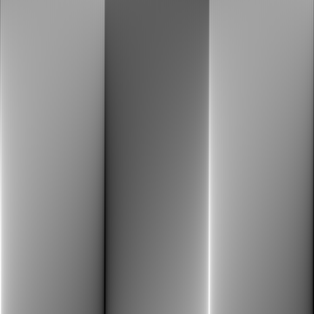
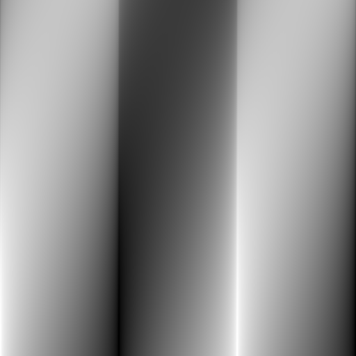
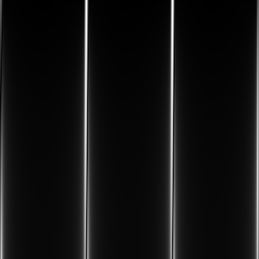
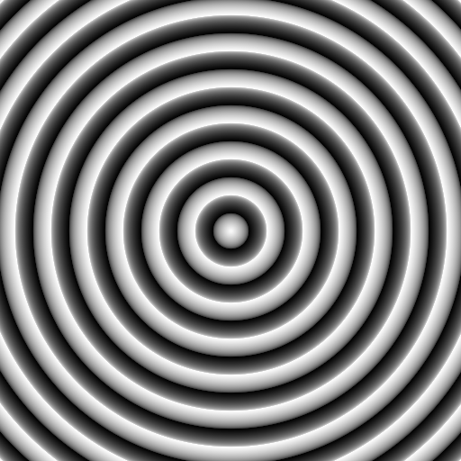
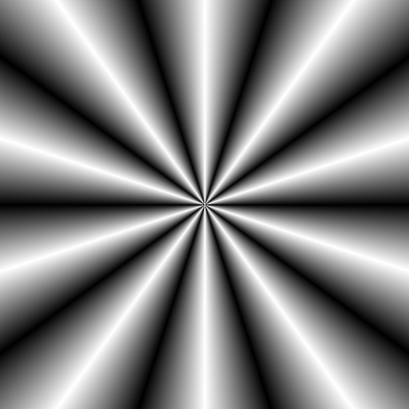
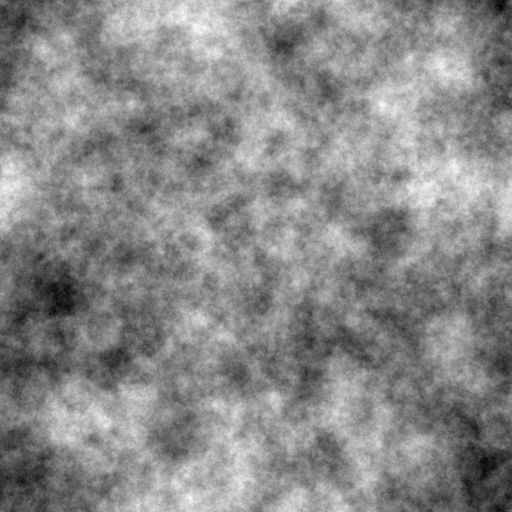
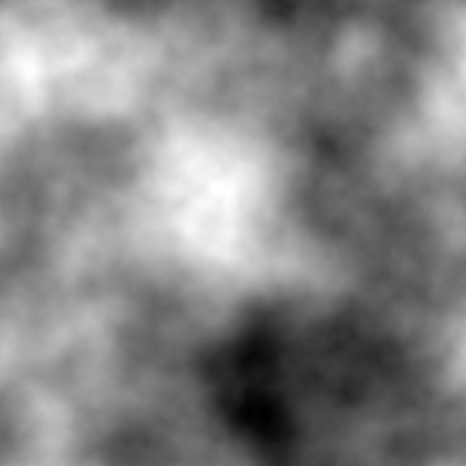

Examples
Note that these examples use PyPlot for the output. However I have had difficulty getting the automated documentation building process to handle PyPlot, accordingly all calls have been commented out. If you want to execute these examples simple reinstate the PyPlot calls and all should be well.
Phase Congruency
Phase congruency marks all classes of features from steps to lines and is a dimensionless quantity that ranges from 0 to 1. This allows fixed thresholds to be used over wide classes of images.
using ImagePhaseCongruency, Images, TestImages #, PyPlot
img = testimage("lena_gray_512")
img = Float64.(img)
#set_cmap(PyPlot.ColorMap("gray"))
#imshow(img); axis("off")
save("lena.png", img) # hide
(pc, or, ft, T) =
phasecongmono(img; nscale=4, minwavelength=3, mult=2,
sigmaonf=0.55, k=3, cutoff=0.5, g=10,
deviationgain=1.5, noisemethod=-1)
#imshow(pc); axis("off")
save("lena_pc.png", imadjustintensity(pc)) # hide
nonmax = thin_edges_nonmaxsup(pc, or)
#imshow(nonmax); axis("off")
save("lena_nm.png", imadjustintensity(nonmax)) # hide
# Hysteresis threshold between Phase Congruency of 0.1 and 0.2
bw = hysthresh(nonmax, 0.1, 0.2)
#imshow(bw); axis("off")
save("lena_bw.png", bw) # hide| Lena | Phase Congruency |
|---|---|
 |  |
| Non-maximal suppression | Hysteresis thresholded |
 |  |
Use of the function phasecong3() allows corner points to be detected as well. These corner points are a subset of the edge image and, unlike other corner detectors, their location is precise and stable over different scales.
using ImagePhaseCongruency, Images, TestImages #, PyPlot
img = testimage("lena_gray_512")
#set_cmap(PyPlot.ColorMap("gray"))
(M, m) = phasecong3(img)
#imshow(M); axis("off") # Edge image
save("lena_Me.png", imadjustintensity(M)) # hide
#imshow(m); axis("off") # 'Corner' image
save("lena_mc.png", imadjustintensity(m)) # hide| Lena edges | Lena corners |
|---|---|
 |  |
Phase Symmetry
Phase symmetry responds well to line like features and circular objects. The number of filter scales will affect the scale of features that are marked. Phase symmetry marks features independently of contrast (a bright circle is not more symmetric than a grey circle) and is a dimensionless quantity between 0 and 1. However this may not be what one desires in which case the symmetry energy may be of greater interest.
using ImagePhaseCongruency, Images, TestImages #, PyPlot
img = Float64.(Gray.(testimage("blobs")))
#set_cmap(PyPlot.ColorMap("gray"))
#imshow(img); axis("off")
save("blobs.png", img) #hide
# Detect regions of bright symmetry (polarity = 1)
(phaseSym, symmetryEnergy, T) = phasesymmono(img; nscale=5, polarity=1)
#imshow(phaseSym); axis("off")
save("blobs_sym1.png", phaseSym) #hide
# Detect regions of dark symmetry (polarity = -1)
(phaseSym, symmetryEnergy, T) = phasesymmono(img; nscale=5, polarity=-1)
#imshow(phaseSym); axis("off")
save("blobs_sym-1.png", phaseSym) #hide
| Blobs | . |
|---|---|
 | |
| Bright symmetry | Dark Symmetry |
 |  |
Phase Preserving Dynamic Range Compression
An example using the 16 bit M51 image. Phase preserving dynamic range compression allows the scale of analysis to be controlled. Here we process the image at wavelengths up to 50 pixels and up to 200 pixels. Longer wavelengths allow larger structures to be seen. Small wavelengths allow fine structures to be seen. Note the image size is (510, 320).
using ImagePhaseCongruency, TestImages, Images #, PyPlot
#set_cmap(PyPlot.ColorMap("gray"))
img = Float64.(testimage("m51"))
#imshow(img)
save("m51.png", imadjustintensity(img)) #hide
# Histogram equalization for reference (with a very large number of bins!)
#imshow(histeq(img, 100000))
save("m51histeq.png", histeq(img, 100000)) #hide
# Phase presserving dynamic range compression at cutoff wavelengths of 50 and
# 200 pixels. Note we scale the image because its raw values are between 0 and
# 1, see the help information for ppdrc() for details.
scale = 1e4
#imshow(ppdrc(img*scale, 50))
save("m51ppdrc50.png", imadjustintensity(ppdrc(img*scale, 50))) #hide
#imshow(ppdrc(img*scale, 200))
save("m51ppdrc200.png", imadjustintensity(ppdrc(img*scale, 200))) #hide| M51 | Histogram equalized (100000 bins) |
|---|---|
 |  |
| ppdrc: wavelength cutoff 50 pixels | ppdrc: wavelength cutoff 200 pixels |
 |  |
Phase Preserving Denoising
using ImagePhaseCongruency, TestImages, Images #, PyPlot
img = Float64.(testimage("lena_gray_512")) # Values in the range 0 to 1
img .+= 0.25 * randn(size(img)) # Add noise with standard deviation of 0.25
cleanimg = ppdenoise(img, nscale = 6, norient = 6, mult = 2.5, minwavelength = 2,
sigmaonf = 0.55, dthetaonsigma = 1.0, k = 3, softness = 1.0)
#set_cmap(PyPlot.ColorMap("gray"))
#imshow(img)
save("lenaplusnoise.png", imadjustintensity(img)) #hide
#imshow(cleanimg)
save("lenadenoised.png", imadjustintensity(cleanimg)) #hide| Lena + noise | Lena denoised |
|---|---|
 |  |
Phase-Amplitude Swapping
A demonstration of the importance of phase information in images. Given two imagesswapphase() takes their Fourier transforms and constructs two new, synthetic, images formed from the swapped phase and amplitude imformation. In general it is the phase information that dominates. However, for textures where the amplitude spectra can be concentrated in a limited set of locations, the reverse can apply.
using ImagePhaseCongruency, Images, TestImages #, PyPlot
img1 = Float64.(testimage("lena_gray_512"))
img2 = Float64.(testimage("mandril_gray"))
(newimg1, newimg2) = swapphase(img1, img2)
#set_cmap(PyPlot.ColorMap("gray"))
#imshow(newimg1)
save("phaselenaampmandril.png", imadjustintensity(newimg1)) #hide
#imshow(newimg2)
save("amplenaphasemandril.png", imadjustintensity(newimg2)) #hide| Phase of Lena, amplitude of Mandril | Amplitude of Lena, phase of Mandril |
|---|---|
 |  |
Phase Quantization
Phase values in an image are important. However, despite this, phase can be quantized very heavily with little perceptual loss. It can be quantized to a few as four levels, or even three. Quantizing to two levels still gives an image that can be interpreted.
using ImagePhaseCongruency, Images, TestImages #, PyPlot
lena = testimage("lena_gray_512")
lena = Float64.(lena)
#set_cmap(PyPlot.ColorMap("gray"))
#imshow(quantizephase(lena,8))
save("lena8.png", imadjustintensity(quantizephase(lena,8))) #hide
#imshow(quantizephase(lena,4))
save("lena4.png", imadjustintensity(quantizephase(lena,4))) #hide
#imshow(quantizephase(lena,3))
save("lena3.png", imadjustintensity(quantizephase(lena,3))) #hide
#imshow(quantizephase(lena,2))
save("lena2.png", imadjustintensity(quantizephase(lena,2))) #hide
| Lena: 8 phase values | Lena: 4 phase values |
|---|---|
 |  |
| Lena: 3 phase values | Lena: 2 phase values |
 |  |
Test Images
The step2line() function generates a phase congruent test image where angle at which the congruency occurs is interpolated from 0 at the top of the image to pi/2 at the bottom. This produces an interpolation of feature type from step edge to line. The point being that phase congruency at any angle produces a feature and the angle at which the congruency occurs defines the feature type. Gradient based edge detectors will only correctly mark the step-like feature towards the top of the image and incorrectly mark two features towards the bottom of the image whereas phase congruency will correctly mark a single feature from top to bottom. In general, natural images contain a roughly uniform distribution of the full continuum of feature types from step to line.
using ImagePhaseCongruency, Images #, PyPlot
#set_cmap(PyPlot.ColorMap("gray"))
#imshow(step2line(ampexponent = -1))
#imshow(step2line(ampexponent = -1.5)) # Note the softer features
# Compute phase congruency on the step2line image using default parameters
(pc,) = phasecongmono(step2line(ampexponent = -1))
#imshow(pc)
# Compute gradient magnitude of the step2line image
fimg = imfilter(step2line(ampexponent = -1), KernelFactors.gaussian((2, 2)))
(gx, gy) = imgradients(fimg, KernelFactors.ando3)
#imshow(sqrt.(gx.^2 + gy.^2)) # Note the doubled responses at the bottom on the image.| step2line ampexponent = -1 | step2line ampexponent = -1.5 |
|---|---|
|  |  |
| Phase Congruency on step2line ampexp=-1 | Gradient magnitude of step2line: ampexp=-1 |
 |  |
using ImagePhaseCongruency, Images #, PyPlot
# Circular features at a phase congruent angle of pi/4
# and an amplitude decay exponent of 1.5
#imshow(circsine(offset = pi/4, ampexponent = -1.5))
# Radial features at a phase congruent angle of pi/2
# and an amplitude decay exponent of 2
#imshow(starsine(offset = pi/2, ampexponent = -2))
# Noise images with amplitude decay exponents of 1.5 and 2.5
#imshow(noiseonf(512, 1.5))
#imshow(noiseonf(512, 2.5))| circsine | starsine |
|---|---|
|  |  |
| noiseonf: p=1.5 | noiseonf: p=2.5 |
|  |  |
Fourier transform of Moisan's periodic image component
The function perfft2() implements Moisan's "Periodic plus Smooth Image Decomposition" which decomposes an image into two components
img = p + swhere s is the 'smooth' component with mean 0 and p is the 'periodic' component which has no sharp discontinuities when one moves cyclically across the image boundaries.
This decomposition is very useful when one wants to obtain an FFT of an image with minimal artifacts introduced from the boundary discontinuities. The image p gathers most of the image information but avoids periodization artifacts.
Reference: L. Moisan, "Periodic plus Smooth Image Decomposition", Journal of Mathematical Imaging and Vision, vol 39:2, pp. 161-179, 2011.
using ImagePhaseCongruency, TestImages, Images, FFTW #,PyPlot
img = Float64.(testimage("lena_gray_512"))
IMG = fft(img) # 'Standard' fft of Lena
(P, S, p, s) = perfft2(img) # 'Periodic' fft of Lena
#set_cmap(PyPlot.ColorMap("gray"))
#imshow(img) # Lena (img = p + s)
#imshow(p) # The periodic component of Lena
save("lena_p.png", imadjustintensity(p)) # hide
#imshow(s) # The smooth component of Lena
save("lena_s.png", imadjustintensity(s)) # hide
#imshow(log.(abs.(fftshift(IMG)))) # Note the vertical and horizontal cross in
# the spectrum induced by the non-periodic edges.
save("lena_fft.png", imadjustintensity(log.(abs.(fftshift(IMG))))) # hide
#imshow(log.(abs.(fftshift(P)))) # Note the clean spectrum because p is periodic.
save("lena_fft_p.png", imadjustintensity(log.(abs.(fftshift(P))))) # hide
| Lena | |
|---|---|
| |
| Lena: periodic component | Lena: smooth component |
 |  |
| Spectrum of periodic component | Spectrum of standard FFT |
 |  |